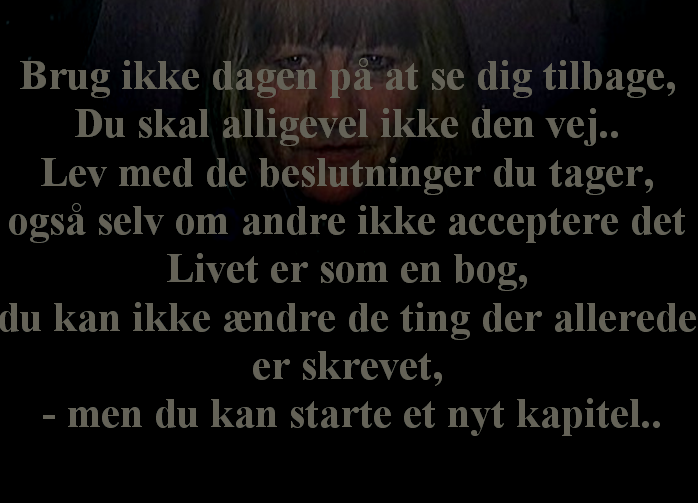

<html>
<head>
<meta http-equiv=Content-Type content="text/html; charset=iso-8859-1">
<meta http-equiv="Content-Language" content="da">
<meta name=ProgId content=FrontPage.Editor.Document>
<meta name=Generator content="Microsoft FrontPage 12.0">
<meta name=Originator content="Microsoft Word 9">

<title>DeVAR</title>
<style>
<!--
body
-->
.style1 {
	font-size: large;
	color: #FFFFFF;
}
</style>
<bgsound src="" loop="-1">
</head>

<body lang=DA link="#FFFFFF" vlink="#FFFFFF" style='tab-interval:65.2pt; '
alink=#FFFFFF bgcolor="#000000" topmargin="0" leftmargin="0" text="#FF00FF">
<b>


</body>

</html></b>
<p align="center"><b><font color="#FF00FF"><font size="5">Du er </font></font>
<span class="style1">nu </span><font size="5" color="#FF00FF">midt i <br>
&nbsp;</font></b><font color="#FF00FF"><b><font size="6">Oraklet DeVAR.</font></b></font></p>
<p align="center"><font color="#FF00FF"><b><font size="5">Du fortælles om De der VAR og <br>
DE der aldrig VAR.<br>
DU bestemmer selv, hvad Oraklet skal åbne for dig! <br>
Hvem VAR de!<br>
De der døde midt i dit liv.&nbsp;</font></b></p>
<p align="center"><b><font size="5">Hvad betød de for DIG!<br>
Hvad gav du DEM!<br>
Hvad lærte DU ved at kende DEM!<br>
Hvad bruger DU det du lærte til!
&nbsp;</font></b></p>
<p align="center"><b><font size="5">Savner du det I havde sammen!<br>
DET<br>
Du er midt i!<br>
</font><font size="6"><a href="at-miste.htm">Oraklet DeVAR.</a></font><font size="5"><br>
DU fortæller om De der VAR og <br>
DE der aldrig VAR.<br>
DU bestemmer selv hvad Oraklet skal åbne for dig! </font></b>
</p>
<p align="center"><a href="ego.htm">Nødudgang</a></font></p>
